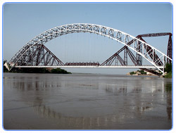

Sukkur district ( Urdu: سکھر ) is a district in Sindh Province in Pakistan. It is divided into 4 administrative strata (tehsils), namely; Sukkur City, Rohri, Saleh Pat and Pano Aqil. Among them Sukkur city and new Sukkur are urban centre while Pano Aqil is famous for having one of largest military cantonment of the country. Rohri is the smallest tehsil of the Sukkur district, both in area and population but is has one of ancient and important railway junction
One conjecture is that when Arabs invaded Sukkur (Sindh) in the 8th century, they found an extreme climate (hot and cold), and called it Saqar, which means intense. However, the word Sakharu in Sindhi means "superior", which the spelling of the city's name in Sindhi suggests is the origin of the name. Sukkur is nicknamed Darya Dino ( meaning the gift of river), as without the Indus the city would be a desert.
Sukkur has been an important strategic centre and trading route from time immemorial. Alor (or Aror, Sukkur) held the status of capital under the reign of Musikanos, when Alexander invaded India in 326 BCE. The ruins of this ancient town still exist, 8 km east of Rohri, in Sukkur district. In 711 CE, the Arabs invaded Sindh, led by 17 years old Muhammad bin Qasim, and Sukkur (including all of Sindh and lower Punjab) became part of the Umayyad Caliphate.
Later Mughals and many semi-autonomous tribes ruled over Sukkur. The city was ceded to Mirs of Khairpur between 1809 and 1824. In 1833, Shah Shuja (a warlord of Kandahar, Afghanistan) defeated the Talpurs near Sukkur and later made a solemn treaty with the Talpur ruler, by which he relinquished all claims on Sindh. In 1843, the British (General Charles James Napier) defeated the Talpurs at the battles of Miani and Dubbo near Hyderabad. Sukkur, along with the rest of Sindh, was under British rule until the independence of Pakistan in 1947. The (current) district of Sukkur was constituted in 1901 out of part of Shikarpur District, the remainder of which was formed into the Larkana District. Sukkur saw a significant socio-economic uplift after the 1930s, when the British built the world's largest barrage here on the Indus River. After the independence of Pakistan in 1947, thousands of Muslim refugees escaping from pograms and genocide in India arrived in Sukkur, while a large number of Hindus left for India.
At the time of Pakistan's independence in 1947, Sukkur district comprised approximately 200,000 habitants, mostly engaged in agricultural pursuits and fishing industry. Over time, Sukkur has seen a moderate rise in population (2 to 2.5% per annum) as compared to Pakistan's, except in late 1960s and early 70s when population growth rate reached 4.43% (1972 census) due to internal migration and establishment of some large bridges on river Indus. According to official census of 1998, Sukkur has 908370 habitants and density of 175.9 persons per square kilometre. The current estimate (on the basis of 2.88% annual growth) shows that Sukkur population has surpassed 1 million.
Sukkur district is chiefly populated by Muslims, that constitute 96% of the total population, of which, the Sunni form a clear majority, about (80%). It also has a sizeable population of Shias (16%), Hindus (3.28%) and Christians(0.51%). Hindus are mostly settled in urban areas and are engaged in the trade and services sectors. Ethnically,Sindhis share the biggest segment of population in Sukkur and Rohri city areas(70.50%), followed by Urdu (15.50%); Punjabi (7.50%); Pashto (2.50%); Seraiki (1.00%); Baluchi (1.00)and others (2.00). Baloch tribes include, Mirani Rind, Chandio, Gabol, Khoso and Leghari. Others include Indhar, Ansaris, Mahers, Syed, Mughals, Soomro, Mangrio, chijjan, Phulpoto, Palh and many more. There are Memon, Punjabi and Siraiki sections. Traditionally Memons were associated with trade and retail business but during last two decades they have ascended as an active social and economic front. Soomro are basically associated with educational and social fields; for their development they perform steps ahead day and night.Terhaily family are basically saraiki speaking,and mostly are associated with profession of law, medical and education.
Following are the demographic indicators of the district (including Kashmore Dist) as per the 1998 census of Pakistan:
The district of Sukkur (whose name is derived from its head quarter Sukkur city) covers an area of 5,165 square kilometres. Geographically it is spanned from 27°05' to 28°02' north latitudes and from 68°47' to 69°43' east longitudes. The city of Sukkur is located at an altitude of 220 feet (67 m) from sea level, having terrestrial coordinates 68°52' east and 27°42' north. It is also the narrowest point of the lower Indus course.
Sukkur district shares its northern border with Shikarpur and the recently constituted Kashmore districts. Ghotki is located on the north-eastern side while Khairpur on the south. Sukkur also shares its border with India (Jaisalmer, Rajasthan). Sukkur is also connected by road and by air with all major cities of Pakistan.
The climate of the Sukkur is characterized by hot and hazy weather during summer days with dry and cold weather in winter. During January, the temperature ranges from 7 to 22 °C (45 to 72 °F). The summer (month of June before the monsoon) temperature averages 35 °C (95 °F) though it often reaches up to 42 °C (108 °F). Generally the summer season commences in March - April and ends before October. The average rainfall of the district is 88 mm, and ranges from 0.59 mm to 25.62 mm per month.
The Sukkur Barrage has 66 Gates. The Sukkur barrage (formally called Lloyd Barrage), built under the British Raj on the Indus river, controls one of the largest irrigation systems in the world. Construction of the bridge was started in 1923 and completed in January 1932. The 5000 feet long barrage is made of yellow stone and steel and can water nearly 10 million acres (40,000 km2) of farmland through its seven large canals. Some of the canals are larger than the Suez Canal.
In November 2004, the government of Pakistan initiated a rehabilitation project to revitalize its water storage capacity and distribution efficiency. The project was completed in July 2005, (with less than the allocated amount of Rs. 887 million). Experts believe that the rehabilitation of the barrage has enhanced its efficiency for another 60 to 70 years.
Sukkur is a hub of many small and large scale industries. Among important industries are cotton textiles, cement, leather, tobacco, paint and varnish, pharmaceuticals, agriculture implements, hand pumps, lock making, rice-husking, and sugar. Small-scale cottage industries comprise hosiery, boat making, fishing accessories, thread ball spooling, trunk making brass-wares, cutlery and ceramics.
Sukkur had a large fertile and cultivable land area until a few decades ago, when the Indus river was not as barren as today. Now its agricultural productivity has been much reduced. It has not achieved a reasonable yield per unit area over time, on account of continuous shortages of water and ignorance of modern irrigation systems. Despite the lack of water, during kharif, rice, bajra, cotton, tomatoes and peas are cultivated; whereas during rabi the main crops are wheat, barley, graham and melons. Sukkur is famous, world over, for its delicious dates. Sukkur also has a large Riveraine forest along the course of the Indus. These tropical forests are found within the protective embankments on either side of the Indus. During 1997-98 the total area under forests was 510 km2 which yielded 55,000 cubic feet (1,600 m3) of timber and 27,000 cubic feet (760 m3) of firewood besides other mine products.
Some important educational institutions in Sukkur: